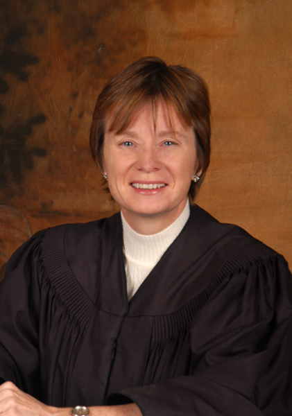

Department 5
Honorable
Deborah Schumacher
(775)328-3186

CLICK HERE TO VIEW CALENDAR SETTINGS FOR A PARTICULAR CASE ON A PARTICULAR DAY. (THIS WILL OPEN A NEW WINDOW AND TAKE YOU TO CASE INQUIRY).Biography
Judge Schumacher has participated in numerous professional efforts to improve the lives of children and families in our community, including the Nevada Children's Justice Task Force, the task force on the Professionalization of Foster Care in Nevada, the Court Improvment Project and the Statewide Adoption Advisory Committee. Judge Schumacher is the "lead judge" of the District's "Model Court" project in the area of improving the handling of foster care cases, under the aegis of the National Council of Juvenile and Family Court Judges. Judge Schumacher founded the District's Juvenile Drug Court.
Judge Schumacher has been on the faculty for continuing education sponsored by the National Judicial College, the National District Attorneys' Association, Nevada Trial Lawyers, the National Council of Juvenile and Family Court Judges, the State Bar of Nevada, and Northern Nevada Women Lawyer's Association. In 2009, Judge Schumacher was elected to the Board of Trustees of the National Council of Juvenile and Family Court Judges. She is married with three children.
Calendar Information for the next 14 days
| Start Time | Case Number & Description | Event Description | Oct-20-2014 |
| 1. 09:00 AM | FV14-01199 - TERM: RAVEN & ALEXANDRA CARROLL (D5) | TERM PARENTAL RIGHTS CONTESTED |
| 2. 13:30 PM | FV14-00683 - TERM: TEYLAR K. EBELING | TERM PARENTAL RIGHTS CONTESTED | Oct-21-2014 |
| 3. 09:00 AM | FV14-02699 - TERM: NATHAN SHAUN ODELL BENNETT HARE, JR (D5) | TERM PARENTAL RIGHTS UNCONTEST |
| 4. 09:30 AM | FV14-02866 - TERM: PAXTON DANE PEROLIO (D5) | TERM PARENTAL RIGHTS UNCONTEST |
| 5. 09:45 AM | FV14-02932 - TERM: LANDON SHANE CLARK (D5) | TERM PARENTAL RIGHTS UNCONTEST | Oct-27-2014 |
| 6. 13:00 PM | FV14-01638 - TERM: ALICIA AND WILLIAM DEANE (D5) | SETTLEMENT CONFERENCE |
| 7. 13:30 PM | FV14-02959 - TERM: MALACHI CRIGGER | TERM PARENTAL RIGHTS UNCONTEST |
| 8. 13:45 PM | FV14-02960 - TERM: KANE WYATT FORD | TERM PARENTAL RIGHTS UNCONTEST | Nov-03-2014 |
| 9. 09:00 AM | FV14-02773 - TERM: DESTINY MARIE GILL (D5) | TERM PARENTAL RIGHTS UNCONTEST |
| 10. 09:15 AM | FV14-01524 - TERM: BRANDON SALONGA ET AL (D5) | TERM PARENTAL RIGHTS UNCONTEST |
| 11. 09:30 AM | FV14-02988 - TERM: ALEXANDER HAKEEM JOHNSON (D5) | TERM PARENTAL RIGHTS UNCONTEST |
| 12. 09:45 AM | FV14-03073 - TERM: BREANNE DELANE HORNBACK (D5) | TERM PARENTAL RIGHTS UNCONTEST |
| 13. 11:00 AM | FV14-01260 - TERM: MADISON DADEY (D5) | SETTLEMENT CONFERENCE |
| 14. 13:15 PM | FV14-00565 - TERM: MARIELL LYNN GATEWOOD (D5) | SETTLEMENT CONFERENCE |
| 15. 13:30 PM | FV14-00564 - TERM: AYANA RUIZ-VINDEL & IVAN RUIZ-VINDEL (D5) | TERM PARENTAL RIGHTS CONTESTED |